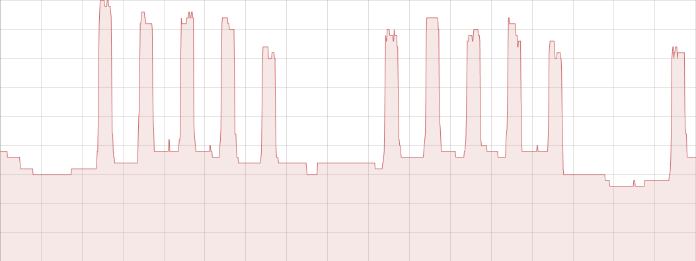
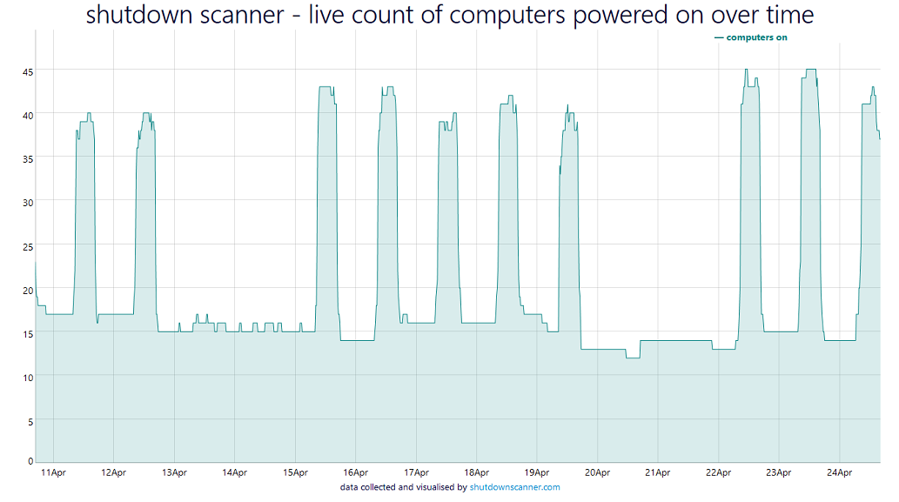

Shutdown Scanner monitoring service
shutdown scanner was a service for monitoring how many computers have been left on in an office out of hours
How it works
- You download and install a small piece of software onto a server on your network that is always on.
- The software scans the local network for devices that are powered on and sends the results to us.
- We process the data in the cloud and show you easy to understand graphs that let you save money.
Why cloud?
- Hosting shutdown scanner online allows us to improve the software and add features without you having to install updates.
- To achieve the same locally we would have to push updates to your servers (which we think is insecure).
- Our download is as simple as possible (with no remote update) as we do most of the work in the cloud.
- If you want a locally hosted version then please sign up to the mailing list.
- Cloud hosting allows you to access your results from anywhere (e.g. on your phone or tablet).
Security
- We take security very seriously and work hard to protect your data.
- All of our connections use encryption (HTTPS) and our systems are firewalled.
- We securely hash your password with a strong one way function (PBKDF2).
- We have a good rating at SSL Labs and use a 4096 bit RSA certificate.
Dashboard
This is the main graph on your dashboard. The horizontal axis shows time and the vertical axis shows the total number of computers on. The daytime peaks are easy to see.
Digital Signage
This is the live graph, which auto updates. It's perfect for having on a digital sign. For a guide on how to make a digital sign with a Raspberry Pi see this blog post.
